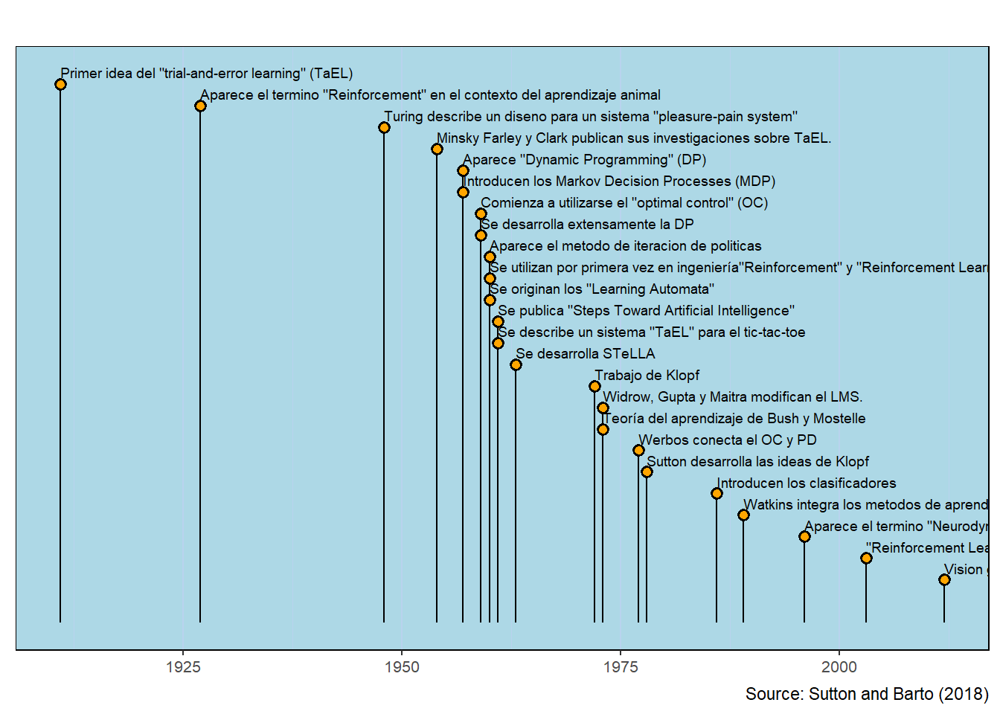

Exercise 1 Read (Sec 1.1, pp 1-2 ) and answer the following. Explain why Reinforcement Learning differs for supervised and unsupervised learning.
El aprendizaje reforzado se centra en aprender a qué hacer y cómo hacer situaciones que lleven a maximizar una recompensa, por otro lado el aprendizaje supervisado consiste en aprender de un conjuto de entrenamiento de ejemplos etiquetados dados por un supervisor externo con conocimientos. El objetivo de este aprendizaje es que el sistema extrapole o generalice sus respuestas para actuar correctamente en situaciones que no están presentes en el conjunto de entrenamiento.
2.2 Exercise 2
Exercise 2 See the first Steve Bruton’s youtube video about Reinforcement Learning. Then accordingly to its presentation explain what is the meaning of the following expression: \[V_{\pi}(s)=E\left(\sum_{t}\gamma^tr_t|s_0=s \right)\]
La función mide de una forma que tan buenas son las acciones que se eligen, es decir la función de valor como la recompensa esperada habiendo elegido una política y un estado inicial.
2.3 Exercise 3
Exercise 3 Form (see ) obtain a time line pear year from 1950 to 2012.
library(bibtex)## Activate the Core Packageslibrary(tidyverse) ## Brings in a core of useful functions
── Attaching core tidyverse packages ──────────────────────── tidyverse 2.0.0 ──
✔ dplyr 1.1.4 ✔ readr 2.1.5
✔ forcats 1.0.0 ✔ stringr 1.5.1
✔ ggplot2 3.5.1 ✔ tibble 3.2.1
✔ lubridate 1.9.3 ✔ tidyr 1.3.1
✔ purrr 1.0.2
── Conflicts ────────────────────────────────────────── tidyverse_conflicts() ──
✖ dplyr::filter() masks stats::filter()
✖ dplyr::lag() masks stats::lag()
ℹ Use the conflicted package (<http://conflicted.r-lib.org/>) to force all conflicts to become errors
Warning: One or more parsing issues, call `problems()` on your data frame for details,
e.g.:
dat <- vroom(...)
problems(dat)
## Sort the table by datedata <- data |>arrange(date)## Build a tablegt(data) |>#cols_hide(columns = event) |>tab_style(cell_text(v_align ="top"),locations =cells_body(columns = date)) |>tab_source_note(source_note ="Source: Sutton and Barto (2018)")
date
event
reference
1911
Primer idea del "trial-and-error learning" (TaEL)
NA
1927
Aparece el termino "Reinforcement" en el contexto del aprendizaje animal
NA
1948
Turing describe un diseno para un sistema "pleasure-pain system"
NA
1954
Minsky Farley y Clark publican sus investigaciones sobre TaEL.
NA
1957
Aparece "Dynamic Programming" (DP)
Bellman, R. E. (1957a). Dynamic Programming. Princeton University Press,Princeton.
1957
Introducen los Markov Decision Processes (MDP)
Bellman, R. E. (1957b). A Markov decision process. Journal of Mathematical Mechanics, 6:679–684
1959
Comienza a utilizarse el "optimal control" (OC)
NA
1959
Se desarrolla extensamente la DP
NA
1960
Aparece el metodo de iteracion de politicas
Howard, R. (1960). Dynamic Programming and Markov Processes. MIT Press, Cambridge, MA.
1960
Se utilizan por primera vez en ingeniería"Reinforcement" y "Reinforcement Learning"
NA
1960
Se originan los "Learning Automata"
NA
1961
Se publica "Steps Toward Artificial Intelligence"
NA
1961
Se describe un sistema "TaEL" para el tic-tac-toe
NA
1963
Se desarrolla STeLLA
NA
1972
Trabajo de Klopf
NA
1973
Widrow, Gupta y Maitra modifican el LMS.
NA
1973
Teoría del aprendizaje de Bush y Mostelle
NA
1977
Werbos conecta el OC y PD
Werbos, P. J. (1977). Advanced forecasting methods for global crisis warning and models of intelligence. General Systems Yearbook, 22:25–38.
1978
Sutton desarrolla las ideas de Klopf
NA
1986
Introducen los clasificadores
NA
1989
Watkins integra los metodos de aprendizaje (MA)
Watkins, C. J. C. H. (1989). Learning from Delayed Rewards. Ph.D. thesis, Cambridge University.
1996
Aparece el termino "Neurodynamic Programming"
Bertsekas, D. P., Tsitsiklis, J. N. (1989). Parallel and Distributed Computation: Numerical Methods. Prentice-Hall, Englewood Cliffs, NJ
2003
"Reinforcement Learning" en economí
NA
2012
Vision general del Reinforcement Learning y Juegos
NA
NA
NA
NA
Source: Sutton and Barto (2018)
## Adjust some defaultscolumn$color <-"orange"column$size <-15column$background_color <-"lightblue"column$text_size <-2.5column$source_info <-"Source: Sutton and Barto (2018)"## Milestones timelinemilestones(datatable = data, styles = column)
Warning: Removed 1 row containing missing values or values outside the scale range
(`geom_text()`).
Warning: Removed 1 row containing missing values or values outside the scale range
(`geom_segment()`).
Warning: Removed 1 row containing missing values or values outside the scale range
(`geom_point()`).
Warning: Removed 25 rows containing missing values or values outside the scale range
(`geom_segment()`).

2.4 Exercise 4
Exercise 4 Consider the following consumption-saving problem with dynamics \[x_{k+1}=(1+r)(x_k-a_k),\hspace{0.5cm}k=0,1,...,N-1,\] and utility function \[\beta^N(x_N)^{1-\gamma}+\sum_{k=0}^{N-1}\beta^k(a_k)^{1-\gamma}\]. Show that the value functions of the DP algorithm take the form \[J_k(x)=A_k\beta^kx^{1-\gamma},\] where \(A_N=1\) and for \(k=N-1,...,0,\)\[A_k=\left[1+((1+r)\beta A_{k+1})^{\frac{1}{\gamma}} \right]^{\gamma}\] Show also that the optimal policies are \(h_k(x)=A_k^{-1/\gamma} x,\) for \(k=N-1,\ldots,0\).
Prueba Procedemos por inducción. Primero comprobamos que se cumple para \(n=N-1\), entonces como \(J_{N}(x)=\beta^{N}(x_N)^{1-\gamma}\), tenemos que
\[J_{N-1}=\min_{a\in A(x)}\{\beta^{N-1}(a)^{1-\gamma} + \beta^{N}(1+r)^{1-\gamma}(x-a)^{1-\gamma}\},\] tomando la derivada con respecto a \(a\) e igualando a cero. \[(1-\gamma)\beta^{N-1}a^{-\gamma}- \beta^{N}(1+r)^{1-\gamma}(x-a)^{-\gamma}\]\[(1-\gamma)\beta^{N-1}a^{-\gamma}-\beta(1+r)^{1-\gamma}(x-a)^{-\gamma}=0\] entonces \[\left(\cfrac{x-a}{a}\right)^\gamma=\beta(1+r)^{1-\gamma}\implies \cfrac{x-a}{a}=[\beta(1+r)^{1-\gamma}]^{\frac{1}{\gamma}}\implies a=\dfrac{x}{[\beta(1+r)^{1-\gamma}]^{\frac{1}{\gamma}}+1}-\] Sea \(a_0\) es punto donde se alcanza el mínimo, por tanto \[J_{N-1}(x)=\beta^{N-1}(a_0)^{1-\gamma}+\beta^N(1+r)^{1-\gamma}(x-a_0)^{1-\gamma}.\] Desarrollando \[J_{N-1}(x)=\dfrac{\beta^{N-1}x^{1-\gamma}}{([\beta(1+r)^{1-\gamma}]^{\frac{1}{\gamma}}+1)^{1-\gamma}}+\beta^N(1+r)^{1-\gamma}\left[\dfrac{x[\beta(1+r)^{1-\gamma}]^{\frac{1}{\gamma}}}{\beta(1+r)^{1-\gamma}]^{\frac{1}{\gamma}}+1}\right]^{1-\gamma}\]\[J_{N-1}(x)=\beta^{N-1}x^{1-\gamma}\left[[\beta(1+r)^{1-\gamma}]^{\frac{1}{\gamma}}+1\right]^{\gamma}\]\[J_{N-1}(x)=A_{N-1}\beta^{N-1}x^{1-\gamma}\] con \[A_{N-1}=\left(1+((1+r)^{1-\gamma}\beta)^{\frac{1}{\gamma}}\right)^{\gamma}\] Ahora, supongamos que es válido para \(n=k+1\), 4 \[J_{k+1}(x)=A_{k+1}\beta^{k+1}x^{1-\gamma}\]. De aquí \[J_k(x)=\min_{a\in (0,x)}\left\{\beta^ka^{1-\gamma}+A_{k+1}\beta^{k+1}(1+r)^{1-\gamma}(x-a)^{1-\gamma} \right\}\] Encontrando el punto mínimo \[(1-\gamma)\beta^ka^{-\gamma}-A_{k+1}\beta^{k+1}(1+\gamma)^{1-\gamma}(1-\gamma)(x-a)^{-\gamma}=0\]\[(1-\gamma)\beta^k\left[ a^{-\gamma}-A_{k+1}\beta(1+r)^{1-\gamma}(x-a)^{-\gamma} \right]=0\]\[a^{-\gamma}-A_{k+1}\beta(1+r)^{1-\gamma}(x-a)^{-\gamma}=0\]\[\left(\dfrac{x-a}{a}\right)^{\gamma}=A_{k+1}\beta(1+\gamma)^{1-\gamma}\]\[a=\dfrac{x}{\left[ A_{k+1}\beta(1+r)^{1-\gamma} \right]^{\frac{1}{\gamma}}+1}\] De igual forma sea el punto mínimo \(a_0\), se tiene \[J_k(x)=\dfrac{\beta^kx^{1-\gamma}}{\left[\left[ A_{k+1}\beta(1+r)^{1-\gamma} \right]^{\frac{1}{\gamma}}+1\right]^{1-\gamma}}+\dfrac{A_{k+1}\beta^{k+1}(1+r)^{1-\gamma}\left(x[A_{k+1}\beta(1+r)^{1-\gamma}]^{\frac{1}{\gamma}}\right)^{1-\gamma}}{\left[\left[ A_{k+1}\beta(1+r)^{1-\gamma} \right]^{\frac{1}{\gamma}}+1\right]^{1-\gamma}}\] Simplificando se concluye que \[\dfrac{\beta^kx^{1-\gamma}\left( 1+[A_{k+1}\beta(1+r)^{1-\gamma}]^{\frac{1}{\gamma}} \right)}{\left(1+[A_{k+1}\beta(1+r)^{1-\gamma}]^{\frac{1}{\gamma}} \right)^{1-\gamma}}=\beta^kx^{1-\gamma}A_k\]
2.5 Exercise 5
Exercise 5 Consider now the infinite–horizon version of the above consumption–saving problem.
Write down the associated Bellman equation.
Argue why a solution to the Bellman equation should be of the form \[v(x)=cx^{1-\gamma}\], where \(c\) is constant. Find the constant and the stationary optimal policy.
Prueba Sea \[cx^{1-\gamma}=\min\left\{ a^{1-\gamma}+\beta c(1+r)^{1-\gamma}(x-a)^{1-\gamma} \right\}\] Calculando el mínimo \[(1-\gamma)a^{-\gamma}-\beta c(1+r)^{1-\gamma}(1-\gamma)(x-a)^{-\gamma}=0\]\[(1-\gamma)\left[ a^{-\gamma}-\beta c(1+r)^{1-\gamma}(x-a)^{-\gamma}\right]=0\]\[a^{-\gamma}-\beta c(1+r)^{1-\gamma}(x-a)^{-\gamma}=0\]\[\left(\dfrac{x-a}{a}\right)^{\gamma}=\beta c(1+r)^{1-\gamma}\]\[x=a\left[\beta c(1+r)^{1-\gamma} \right]^{\frac{1}{\gamma}}+a\]\[a_0=a=\dfrac{x}{\left[\beta c(1+r)^{1-\gamma} \right]^{\frac{1}{\gamma}}+1}\] Sustitimos \(a_0\)\[cx^{1-\gamma}=\dfrac{x^{1-\gamma}+\beta c(1+r)^{1-\gamma}x^{1-\gamma}\left[ (\beta c (1+r)^{1-\gamma})^{\frac{1}{\gamma}} \right]^{1-\gamma}}{\left[ (\beta c (1+r)^{1-\gamma})^{\frac{1}{\gamma}} +1\right]^{1-\gamma}}\]\[cx^{1-\gamma}=x^{1-\gamma}\left[1+[\beta c (1+r)^{1-\gamma}]^{\frac{1}{\gamma}}\right]^{\gamma}\] así, \[cx^{1-\gamma}=x^{1-\gamma}\left[1+[\beta c(1+r)^{1-\gamma}]^{\frac{1}{\gamma}}\right]^{\gamma}\]\[c=\left[1+[\beta c(1+r)^{1-\gamma}]^{\frac{1}{\gamma}}\right]^{\gamma}\]\[c^{\frac{1}{\gamma}}=1+[\beta c(1+r)^{1-\gamma}]^{\frac{1}{\gamma}}\]\[c^{\frac{1}{\gamma}}=\left[1-\beta^{\frac{1}{\gamma}}(1+r)^{\frac{1-\gamma}{\gamma}}\right]\]\[c^{\frac{1}{\gamma}}=\dfrac{1}{1-\beta^{\frac{1}{\gamma}}(1+r)^{\frac{1-\gamma}{\gamma}}}\]
2.6 Exercise 6
Exercise 6 Let \(\{\xi_k\}\) be a sequence of iid random variables such that \(E[\xi]=0\) and \(E[\xi^2]=d\). Consider the dynamics \[x_{k+1}=x_k+a_k+\xi_k,\hspace{0.5cm}k=0,1,2,...,\] and the discounted cost \[E\sum \beta^k(a_k^2+x_k^2).\] i. Write down the associated Bellman equation.
Conjecture that the solution to the Bellman equation takes the form \(v(x)=ax^2+b\), where \(a\) and \(b\) are constant.
Determine the constants \(a\) and \(b\).
Conjecture that the solution to the Bellman equation takes the form \(v(x)=ax^2+b\), where \(a\) y \(b\) are constant. Determine the constants \(a\) and \(b\). Prueba Sea \(A=a\) y \(B=b\), entonces \[Ax^2+B=\min_{a\in A(x)}\{a^2+x^2+\beta E[A(x+a+\xi)^2+B]\}\]\[Ax^2+B=\min_{a\in A(x)}\{a^2+x^2+\beta AE[(x+a+\xi)^2]+\beta B\}\]\[=\min_{a\in A(x)}\{a^2+x^2+A\beta E[x^2+2ax+a^2+2(x+a)\xi+\xi^2]+\beta B\}\]\[=\min_{a\in A(x)}\{a^2+x^2+A\beta x^2+2axA\beta+A\beta a^2+A\beta d+\beta B\}\] Encontrando el mínimo con la derivada \[2a+2xA\beta+2A\beta a=0\] entonces, \[a=\dfrac{-xA\beta}{1+A\beta}\] así \[Ax^2+B=\dfrac{(xA\beta)^2}{(a+A\beta)^2}+x^2+\beta E\left[A\left(\dfrac{x}{1+A\beta}+\xi \right)^2 \right]+\beta B\]\[=\dfrac{x^2A^2\beta^2}{(1+A\beta)^2}+x^2+A\beta E\left[ \dfrac{x^2}{(1+A\beta)^2}+\dfrac{2x\xi}{1+A\beta}+\xi^2\right]+\beta B\]
\[=\dfrac{x^2A\beta(1+A\beta)}{(1+A\beta)^2}+x^2+A\beta d+\beta B\]\[=x^2\left(1+\dfrac{A\beta}{1+A\beta}\right)+A\beta d+\beta B\] Por lo que \[A=1+\dfrac{A\beta}{1+A\beta},\hspace{0.5cm}B=\dfrac{A\beta d}{1-\beta}\] De esta forma \[A=\dfrac{1+2A\beta}{1+A\beta}\]\[A^2\beta+A(1-2\beta)-1=0\] Obteniendo las soluciones \[A=\dfrac{-1+2\beta\pm \sqrt{4\beta^2+1}}{2\beta}\]